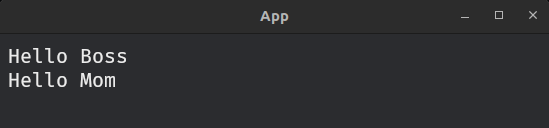

Getting Start
use bevy::prelude::*;
use famiq::prelude::*;
fn main() {
App::new()
.add_plugins(DefaultPlugins)
.add_plugins(FamiqPlugin) // add plugin
.add_systems(Startup, setup)
.run();
}
fn setup(
mut commands: Commands,
mut famiq_res: ResMut<FamiqWidgetResource>, // required
asset_server: ResMut<AssetServer>, // required
) {
commands.spawn(Camera2d::default());
// create a widget builder
let mut builder = FamiqWidgetBuilder::new(
&mut commands,
&mut famiq_res,
&asset_server,
);
// create simple texts using the builder
let hello_boss = fa_text(&mut builder, "Hello Boss").build();
let hello_mom = fa_text(&mut builder, "Hello Mom").build();
// add texts to container
fa_container(&mut builder)
.children([hello_boss, hello_mom])
.build();
}
What is FamiqWidgetBuilder?
In simple terms, FamiqWidgetBuilder is the root UI node that acts as a starting point for building and managing widgets. All widgets are created and structured on top of this root.
FamiqWidgetBuilder provides some useful methods:
🔵 use_font_path()
By default, Famiq uses Fira mono regular as default font. To use another font, you can
simply call use_font_path() method.
Example
-
For normal project structure:
my_project/ ├── assets/ │ ├── fonts/ │ │ ├── Some-font.ttf ├── src/builder.use_font_path("fonts/Some-font.ttf"); -
For Multi-Crate/Workspace project structure: In a multi-crate workspace, the custom font path is read from the subcrate/member's
assets/folder:my_project/ ├── sub_crate_1/ │ ├── assets/ │ │ ├── fonts/ │ │ │ ├── Some-font.ttf │ ├── src/ ├── sub_crate_2/ │ ├── assets/ │ ├── src/// Inside subcrate 1 builder.use_font_path("fonts/Some-font.ttf");z
⚠️ some fonts might cause rendering issue including positioning and styling.
🔵 register_tooltip()
This method enable tooltip option for some widgets. Currently only fa_button and fa_circular support tooltip option.
Note
If use_font_path is called, register_tooltip must be called after use_font_path
to ensure that the custom font is applied to the tooltip.
builder.register_tooltip();🔵 use_style_path()
By default, Famiq will look for json file for styling at assets/styles.json, relative to root directory. If you want to use another path or name, you can simply call use_style_path() method.
Note
- For Multi-Crate/Workspace project structure: if you have json file inside sub-crate
assetsdirectory, you need to specify full path relative to root directory, not sub-crate.
builder.use_style_path("path/to/sub-crate/assets/subcrate-style.json");🔵 hot_reload()
This method will enable hot-reload. When it's enabled, every changes in json file will reflect the running app immediately without needing to re-compile the app.
builder.hot_reload();⚠️ hot-reload is expensive and it should be enabled only during development.